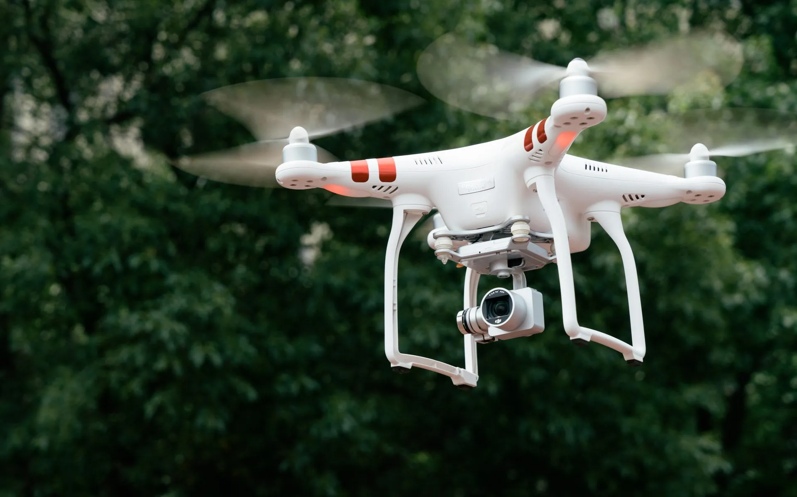

低空經濟
將經過整車量產驗證的感知與導航技術移植到無人機平臺
查看低空經濟詳情應急救援作業物流配送業務測繪作業車規級環境感知技術高精度定位能力特種場景巡檢應用
低空飛行需要在嚴格的尺寸、重量、功耗及實時性能約束下，保持可靠的避障與自主導航能力。寅家科技依託 VT-Navigara 技術平台，將視覺感知、多傳感器融合定位與導航以及規劃控制能力延伸至低空場景，面向無人機物流、巡檢、應急救援及測繪等應用，提供軟硬件一體化的低空智能解決方案。
01
通用的技術底座
複用經過地面出行場景驗證的感知、定位與控制技術，形成面向低空平台的核心能力。
02
豐富的應用場景
覆蓋物流、巡檢、應急救援、測繪、環境感知和高精度定位等方向。
低空環境感知避障
基於多目視覺與深度學習演算法，識別電線、塔杆、建築物等低空障礙物，即時輸出障礙物方位與距離，為飛行器提供可靠的避障能力。
複雜環境多傳感器融合定位與導航
融合視覺、慣導與衛星定位資訊，在樓宇之間、橋洞之下等衛星訊號受限環境中，依然保持連續、穩定的位置感知、導航與航跡保持。
從地面到低空的技術延伸
地面出行的感知、定位與控制技術與低空飛行器高度同源，經量產驗證的軟硬體體系可直接複用，加速低空裝備的智能化落地與規模化應用。
技術複用
Technology ReuseVT-Sensing
低空視算一體化感知- 障礙物識別與測距
- 電線、塔杆細目標檢測
- 全天候視覺感知
VT-Navi
低空多傳感器融合定位與導航- 視覺 + 慣導 + 衛星融合
- 訊號受限環境連續定位
- 高精度航跡保持
VT-Vulcan®
飛行規劃與控制- 航線規劃與動態調整
- 自主避障決策
- 功能安全架構